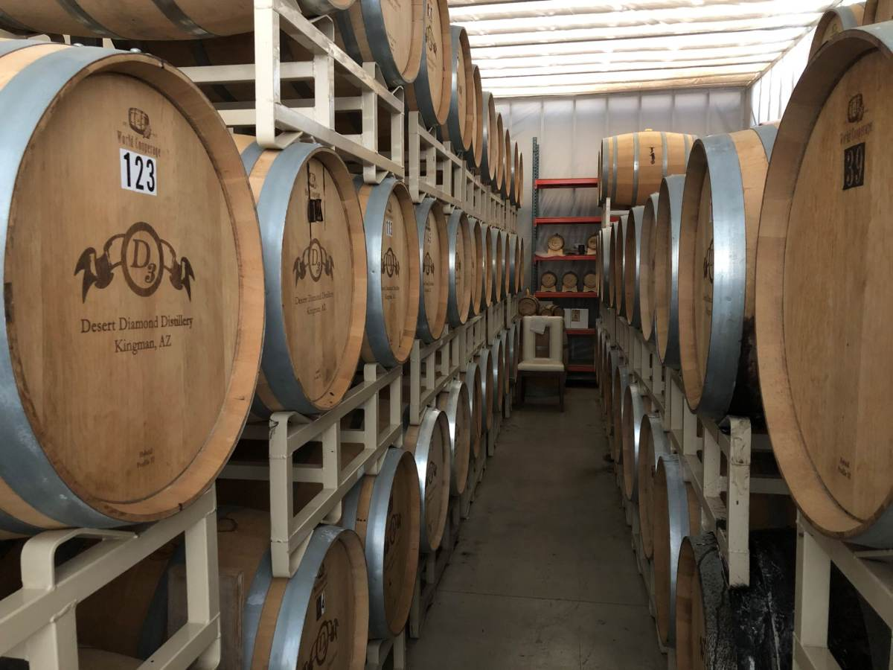
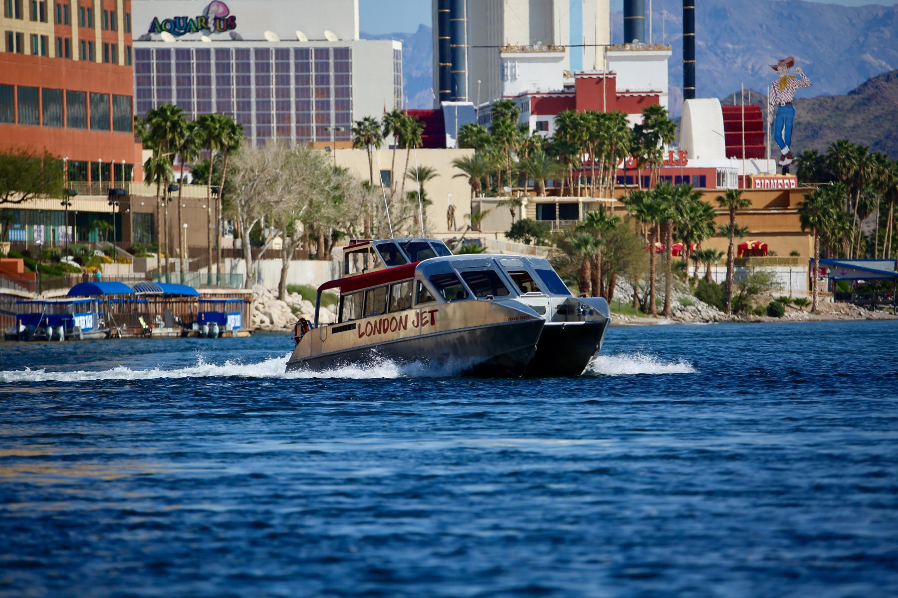
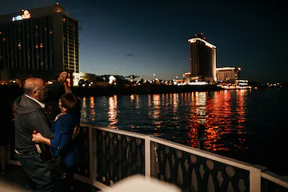

Dolan Springs, AZ
This is an experience of a life time. Explore the desert by driving off-road in a UTV accross eight different terrains in the Mohave Desert. Explore slot canyons, climb the peak of a 4500 foot mountain,
visit an old abandonned mine from the late 1800's and go at the waterfront to kick back and relax. Follow your Guide Jake in this small, private and personalized guided off-roading experience. Create unforgettable memories,
then relive them through the free photos provided by OUI Experience!!


Enjoy a delicious and authentic Western-Style meal, spent the night in a cowboy cabana, a glamping tent or an overnight Cowboy Camp Out.
Enjoy a Horseback Ride, a Gun Range or a Horse-drawn Wagon Ride.

Taste our Barrel-aged spirits ranked top-tier six years in a row at the London International Wine and Spirit competition. Call for tour availability.

Lodge in one of the twelve charming cabin style rooms, eat a delicious meal at the restaurant and during the summer enjoy live music on the patio. Explore the hiking trails, and see wild elk or deer.
You can even play Disc Golf in a challenging course on the mountain.

Only 20 minutes east of Kingman, AZ, you'll see over 130 wild animals such as lions, tigers, wolves, bears, leopards, primates and various wildlife indigenous to the beautiful Southwest.
Keepers of the Wild protects abused, neglected, abandoned, and retired captive wildlife.

Choose one of the different packages to explore many of the areas around Laughlin like their Oatman / Rt66 Combo Tour. One of the most scenic drives in the Southwest.

Book a Tee-time, unwind and indulge at the Spa and Salon or eat a delecious meal at the Laughlin Ranch Golf Club. Explore the different activities that occur every month.

Take a breathtaking, 58 mile, 6-hour roundtrip excursion from Laughlin, Nv to the LONDON BRIDGE in Lake Havasu City, AZ .

Plan a different dinner date with the scenic and memorable sunset dinner cruise down the Colorado River in Laughlin, NV.